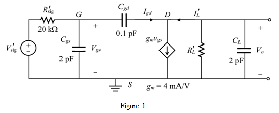
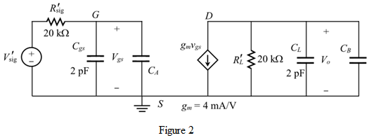

Step 1:
Refer to Figure 9.19 in the text book for high frequency equivalent circuit of the common source amplifier.
The high frequency equivalent circuit is shown in Figure 1.

Step 2:
Clearly observe that the capacitive element  is in between the gate and drain. Split this capacitor by applying the Millers theorem to the circuit. In other words, the capacitor splits into two capacitors existed in input and output side. Let the gain of the circuit is,
is in between the gate and drain. Split this capacitor by applying the Millers theorem to the circuit. In other words, the capacitor splits into two capacitors existed in input and output side. Let the gain of the circuit is,
The capacitor in the input side is,
The capacitor in the output side is,
Step 3:
The modified circuit is shown in Figure 2.

Step 4:
The current expression in Figure 1 is,
Here, the current through the small capacitor  is much smaller than the current through the dependent source, . In other words, the current is zero. Therefore,
is much smaller than the current through the dependent source, . In other words, the current is zero. Therefore,
The current through the small capacitor  is also much smaller than the current through the load resistor. So, the voltage across the load resistor is now given by,
is also much smaller than the current through the load resistor. So, the voltage across the load resistor is now given by,
Therefore,
Step 5:
Calculate the gain when load .
Therefore, the gain is .
Step 6:
Calculate the gain when load .
Therefore, the gain is .
Step 7:
Calculate the gain when load .
Therefore, the gain is .
Step 8:
From Figure 2, the total capacitance in input side is,
The total capacitance in output side is,
According to the open circuit time constant method, the time constant expression is derived by considering the various capacitors at a time in the circuit. The expression for time constant with contribution of capacitor is calculated by removing all other capacitors in input side. This process is applicable to all other existed capacitors.
The total time constant is,
Step 9:
The pole at the input side is,
Here,Upper 3dB frequency or cut off frequency, 
Signal resistance, 
Gate to source capacitance, 
Gate to drain capacitance, 
Load resistance,
Substitute for  , for
, for  , 2 pF for
, 2 pF for  , for
, for  , and 4 mA/V for
, and 4 mA/V for  in the expression of
in the expression of  .
.
Step 10:
The total time constant is,
The pole at the output side is,
Substitute for  ,
,  for
for  , 2 pF for
, 2 pF for  ,
,  for
for  , and 4 mA/V for
, and 4 mA/V for  in the expression of .
in the expression of .
Step 11:
The unity current gain frequency of MOSFET is,
Substitute  for
for  , and 4 mA/V for
, and 4 mA/V for  .
.
Step 12:
Now, compare all three 3 dB or cut off frequencies to determine the dominant pole.
Obviously, the least one is the dominant pole. Therefore, the dominant pole or cut off frequency is,

Therefore, the dominant pole is .
Step 13:
Calculate the gain-bandwidth product.
Therefore, the gain-bandwidth product is .
Step 14:
Step 15:
Now, compare all three 3 dB or cut off frequencies to determine the dominant pole.

Obviously, the least one is the dominant pole. Therefore, the dominant pole or cut off frequency is,
Therefore, the dominant pole is .
Step 16:
Calculate the gain-bandwidth product.
Therefore, the gain-bandwidth product is .
Step 17:
Substitute  for
for  ,
,  for
for  , 2 pF for
, 2 pF for  , for
, for  , and 4 mA/V for
, and 4 mA/V for  in the expression of .
in the expression of .
Substitute  for ,
for ,  for
for  , 2 pF for
, 2 pF for  ,
,  for
for  , and 4 mA/V for
, and 4 mA/V for  in the expression of
in the expression of  .
.
Now, compare all three 3 dB or cut off frequencies to determine the dominant pole.

Obviously, the least one is the dominant pole. Therefore, the dominant pole or cut off frequency is,
Therefore, the dominant pole is  .
.
Step 18:
Calculate the gain-bandwidth product.
Therefore, the gain-bandwidth product is .
Step 19:
All results in tabular form are shown in the Table 1.
Table 1
Step 20:
The unity gain frequency is the frequency where the short circuit current gain is equal to one.
The unity current gain frequency of MOSFET is,
Clearly, observe that the unity gain frequency is higher than the gain bandwidth product because the gain and 3-dB frequency both depends on the load resistance.
The relation between the unity gain frequency and 3-dB frequency is,
The frequency trade-off of the gain bandwidth product is to decrease the 3-dB frequency when increasing the gain and vice versa. This phenomenon is observed from the Table 1.
 for
for  ,
,  for
for  , 2 pF for
, 2 pF for  ,
,  for
for  , and 4 mA/V for
, and 4 mA/V for  in the expression of .
in the expression of . for
for  ,
,  for
for  , 2 pF for
, 2 pF for  ,
,  for
for  , and 4 mA/V for
, and 4 mA/V for  in the expression of .
in the expression of .